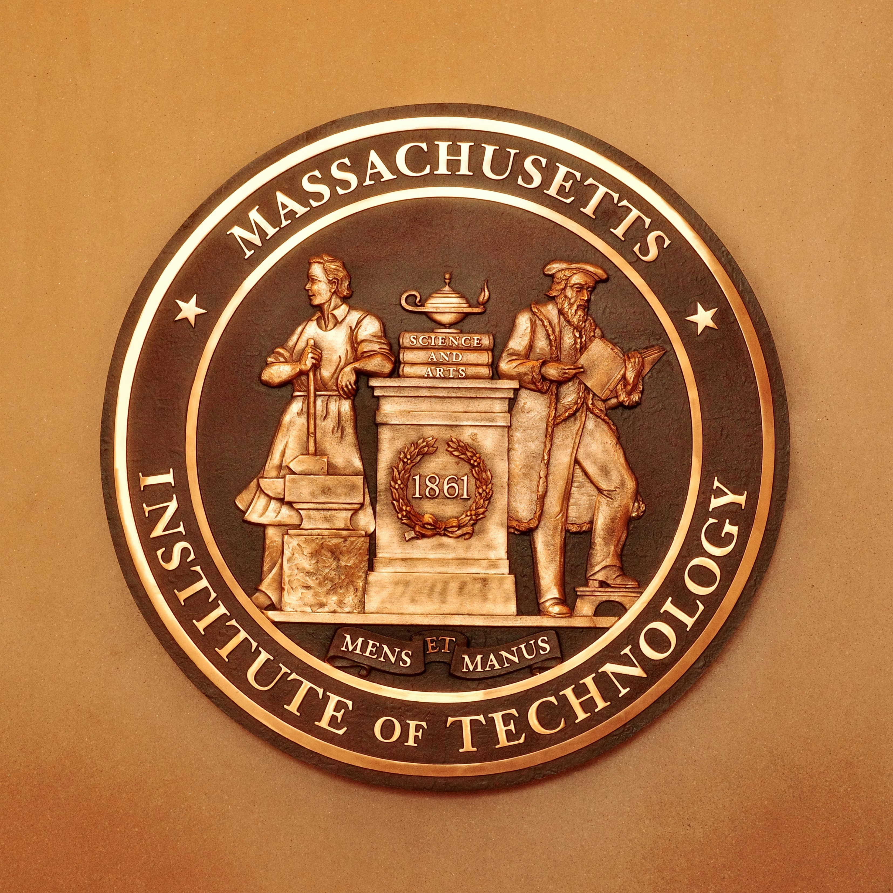
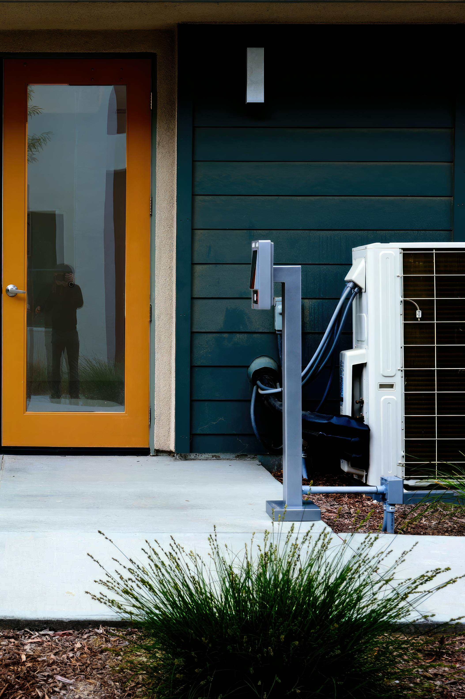
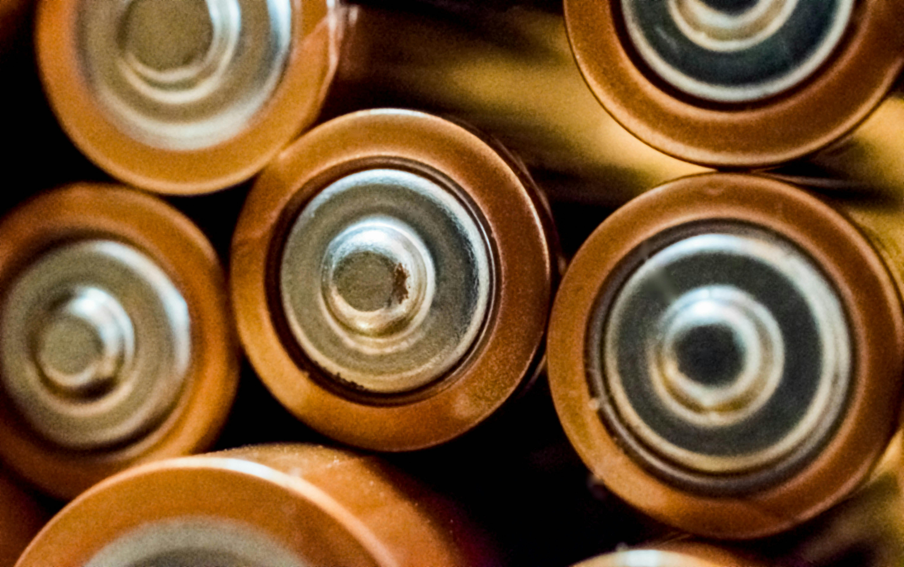

MIT provides information in this article about how renewable energy now provides over 30% of the world's electricity, with hydropower contributing the most while wind and solar are growing the fastest. Variable energy sources like wind and solar create challenges for electric grids because their power output depends on weather conditions and is often generated far from where electricity is needed. Expanding renewable energy use will require improvements in energy storage, backup power systems, and long-distance transmission infrastructure. Despite competition from fossil fuels and other low-carbon technologies, renewable energy continues to grow rapidly due to lower costs, government support, and global efforts to reduce greenhouse gas emissions.
This article by COnsumer Reports explains how smart thermostats can improve home comfort by using remote sensors and smartphone controls to better manage heating and cooling in different rooms. It also discusses situations where smart thermostats may not provide major benefits, such as in homes that already use programmable thermostats, have constant occupancy, or use modern energy-efficient HVAC systems. Additionally, the article points out compatibility issues with older heating systems and notes that smart thermostats may not work well with certain setups like electric baseboard heaters.
This article explains that recycling lithium-ion batteries is much better for the environment than mining new metals because it uses less energy, water, and produces fewer greenhouse gas emissions. It also discusses how factors like cleaner electricity sources, shorter transportation distances, and improved recycling technologies can make battery recycling even more sustainable. The article highlights the growing importance of battery recycling as demand for electric vehicles increases and supplies of critical minerals like lithium, cobalt, and nickel become more limited.